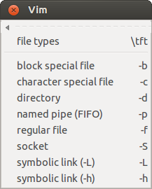
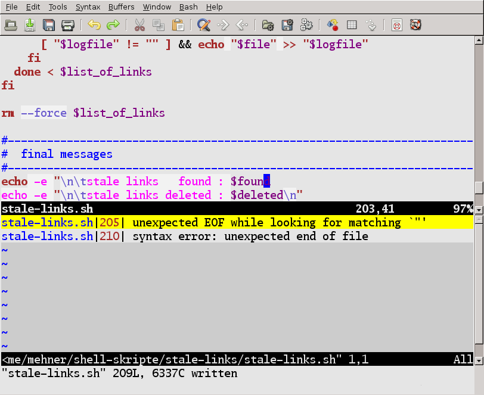
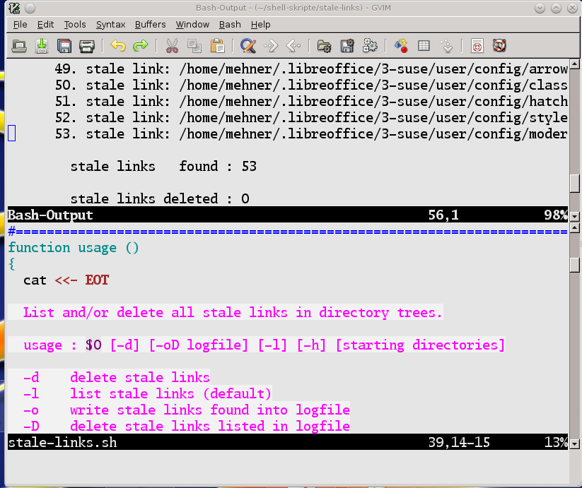
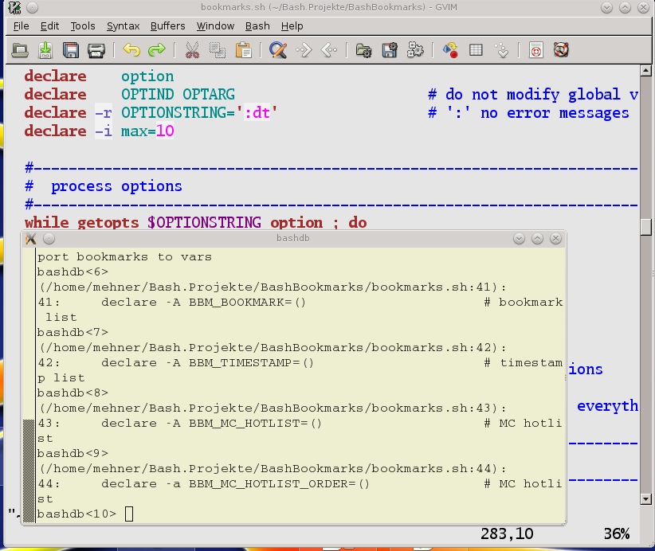
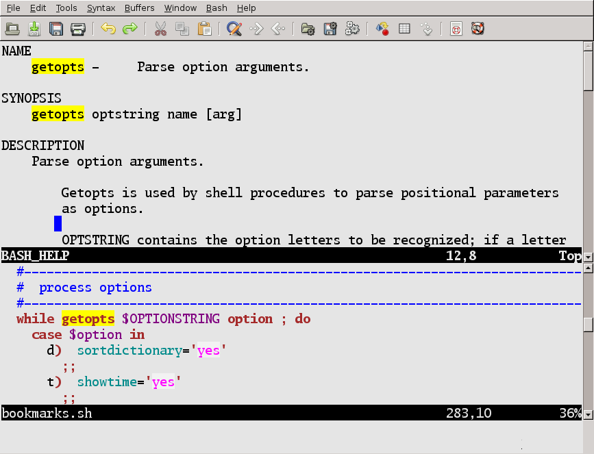

Menu Comments : insert comments
A lot of the menu entries are defined in a so-called template library. The library defines the menu entries, maps and the inserted text. The personal information can also be configured there.
A file description can be inserted into each new file:
#!/bin/bash - #=============================================================================== # # FILE: content.html # # USAGE: ./content.html # # DESCRIPTION: # # OPTIONS: --- # REQUIREMENTS: --- # BUGS: --- # NOTES: --- # AUTHOR: Wolfgang Mehner (WM), wolfgang-mehner@web.de # ORGANIZATION: # CREATED: 23.03.2016 12:00 # REVISION: --- #=============================================================================== set -o nounset # Treat unset variables as an error
This prolog is generated from the template shown below. This template file can easily be changed by the user.
Tags (like |FILENAME|) are replaced when the template is inserted.
== Comments.file description == start, map:ch == #!/bin/bash - #=============================================================================== # # FILE: |FILENAME| # # USAGE: ./|FILENAME| # # DESCRIPTION: # # OPTIONS: --- # REQUIREMENTS: --- # BUGS: --- # NOTES: --- # AUTHOR: |AUTHOR| (|AUTHORREF|), |EMAIL| # ORGANIZATION: |ORGANIZATION| # CREATED: |DATE| |TIME| # REVISION: --- #=============================================================================== set -o nounset # Treat unset variables as an error <CURSOR> == ENDTEMPLATE ==
The entry keyword comments ➞ todo generates a special end-of-line comment. These comments are easily locatable by their keywords (e.g. :TODO:). Date and author reference name are inserted by the editor.
# :TODO:29.02.2015 12:34:WM:
These comments are not for the final version of a script, of course.
Menu Statements : insert statements
Insert statements with jump tags for convenient editing, using the entry if-else or via the map \sie:
if | ; then <-IF_PART-> else <+ELSE_PART+> fi
The cursor is positioned after the "if". Use CTRL+J to jump to the tags and start editing.
A lot of menu entires have a special behavior in visual mode. Select some lines in visual mode ...
# remove the file rm $FILE
then use the entry if. The text is inserted around the selected lines and they are indented:
# remove the file if | ; then rm $FILE fi
Menu Tests : insert testsSelect tests from the menu. After inserting the if-statement ... # remove the file if | ; then rm $FILE fi use file types ➞ regular file to insert the test: # remove the file if [ -f | ] ; then rm $FILE fi |
 |
Menu SpecParams : insert special parameters
The submenus contain frequently used special parameters. The menus contain the name and an explanation of the variables, which saves a lot of time used on searching in reference manuals.
The variables can also be inserted using the map \bsp. You will be prompted for the variable, use tab-completion for convenient searching.
Other menus offer the same functionality for environment variables, built-in functions, I/O redirection, ...
Menu Snippets : insert code snippets and manage templates
The plug-in comes with a facility to extract, manage and insert often used code snippets. Visually select a few lines and use the menu entry write code snippet to write these lines into a file. The code snippet can then be edited and inserted again using read code snippet.
(See :help bashsupport-snippets)
The templates which define the behavior of most of the menu entries are also manage here. Use templates setup wizard to create a personalization file with your personal details for the comments.
The templates support different coding styles. Use the entry choose style to switch between them.

Menu Run : run script, check syntax, do lint check, ...
Running a faulty script, the errors are displayed in a quickfix window.
{kind=link}
Redirect the output into a Vim buffer.
{kind=link}
Start the debugger bashdb with a keystroke.
{kind=link}
Menu Help : call helpHelp is quickly accessible through the Help menu. Place the cursor on the name of a built-in or external program ... while getopts $OPTIONSTRING option ; do then use one of the entries or the maps \hh or \hm to display the help in a Vim buffer. The same works for any word in the English language. Placing the cursor on a word and hitting \he opens a dictionary for the word. |
 read help for built-ins |
{kind=link}